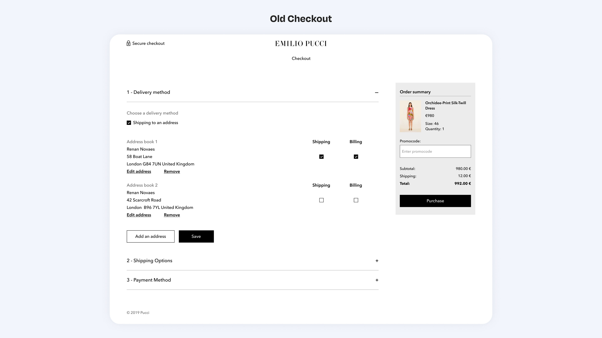
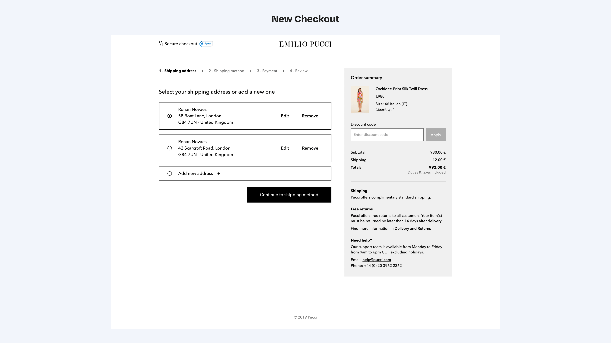

Summary
I led the complete redesign of SL web app, a product used by millions of Brazilians every day. We dramatically simplified the user experience, focusing on core interactions, speed, and simplified navigation. Making it beautiful in the process was just the icing on the cake.
About the company
SL is the biggest Brazilian community dedicated to the kinky lifestyle with more than 8 million users. The company believes that society still treats sexuality as taboo, so its purpose is to provide a safe and judgment-free environment for people to live their fantasies. SL users subscribe to its platform to meet and hook up with single individuals and couples from any part of the world with total respect, security, privacy, and no judgments.
Summary
I led the complete redesign of SL web app, a product used by millions of Brazilians every day. We dramatically simplified the user experience, focusing on core interactions, speed, and simplified navigation. Making it beautiful in the process was just the icing on the cake.
About the company
SL is the biggest Brazilian community dedicated to the kinky lifestyle with more than 8 million users. The company believes that society still treats sexuality as taboo, so its purpose is to provide a safe and judgment-free environment for people to live their fantasies. SL users subscribe to its platform to meet and hook up with single individuals and couples from any part of the world with total respect, security, privacy, and no judgments.

One of the biggest changes in the navigation was the new profile page. In this section, I organized all the features related to the user profile, account settings, and privacy options. In the old interface, all these elements were lost inside the hamburger menu and other areas of difficult access. I took great care on preserving some essential features:

A brand new and convenient profile page
One of the biggest changes in the navigation was the new profile page. In this section, I organized all the features related to the user profile, account settings, and privacy options. In the old interface, all these elements were lost inside the hamburger menu and other areas of difficult access. I took great care on preserving some essential features:
-
For the business: The call to action for subscription and token purchase;
-
For the user: Access to public profile and profile edition.

Defining business KPI's
In order to define the success of our project, I defined some KPI's that must be followed after releasing. Each metric should be analyzed carefully to understand its impact on the business and the user experience. These were the chosen indicators:
Access metrics
-
Sessions per user (per day, month)
-
Average session duration
-
Pages per session
-
Pages per session
Activity metrics
Conversion metrics
-
Conversion rate
-
Time to the first sent message
Custom metrics
-
Engagement Score (Based on the activity level on the platform)
-
Success Score (message response rate)
-
Onboarding Key Metrics (Completed steps)
Next steps
By the time I left this project, it was under a test with a restricted group of beta testers so that the analysis of the KPIs could be made and feedback collected to make the necessary adjustments. Once the team validated all the key points of the project, a beta version would be released little by little to new users so that in a few months it could be offered to the entire customer base.